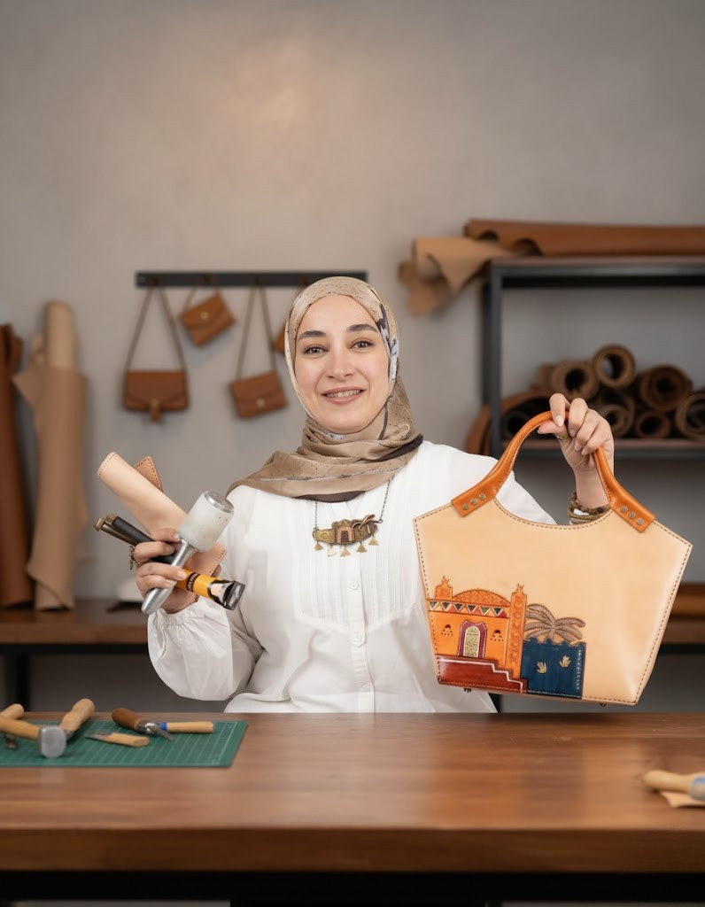
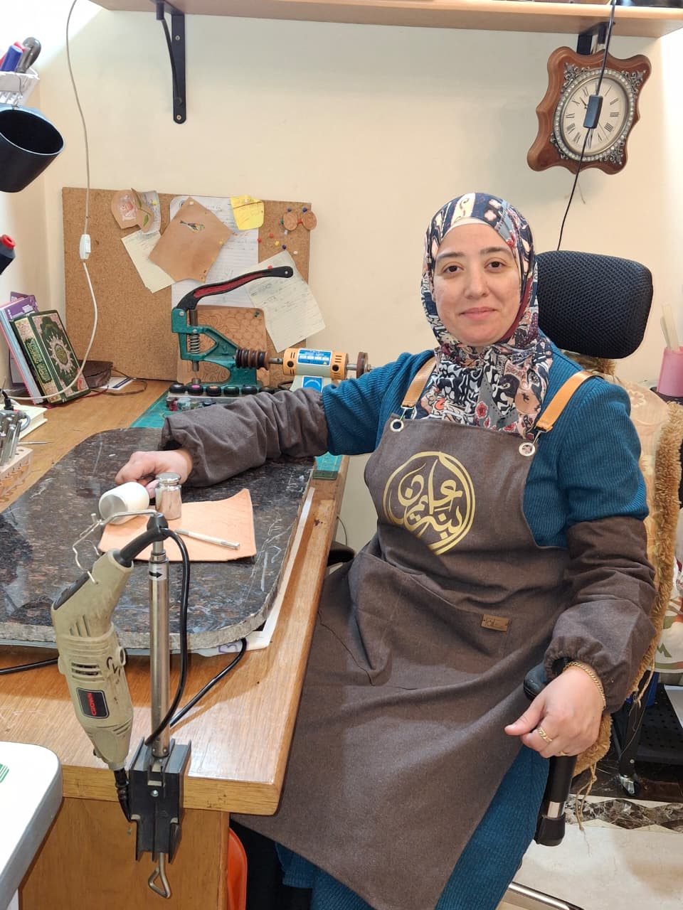
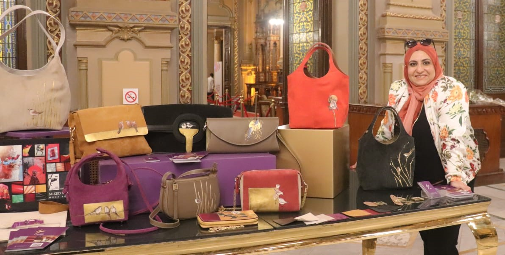
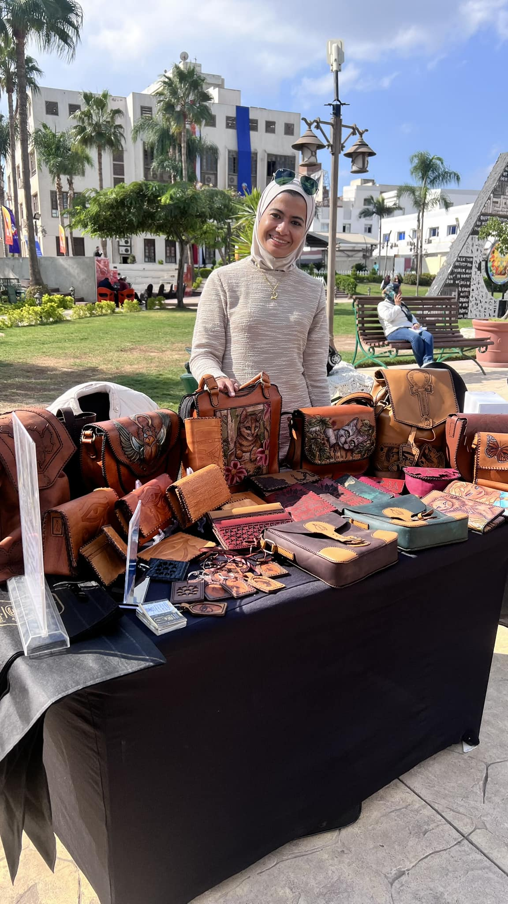
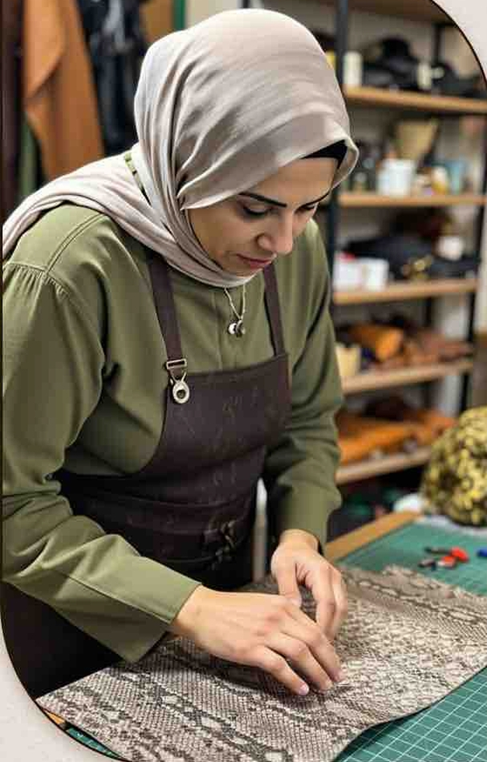
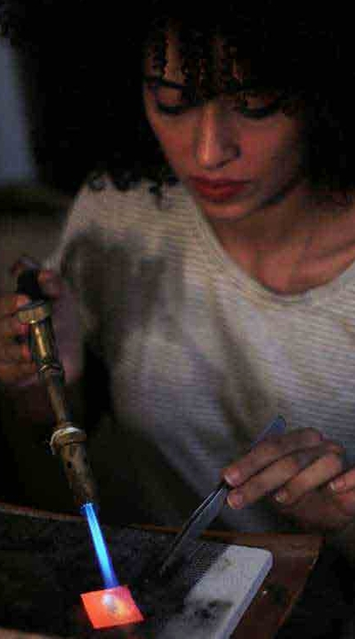
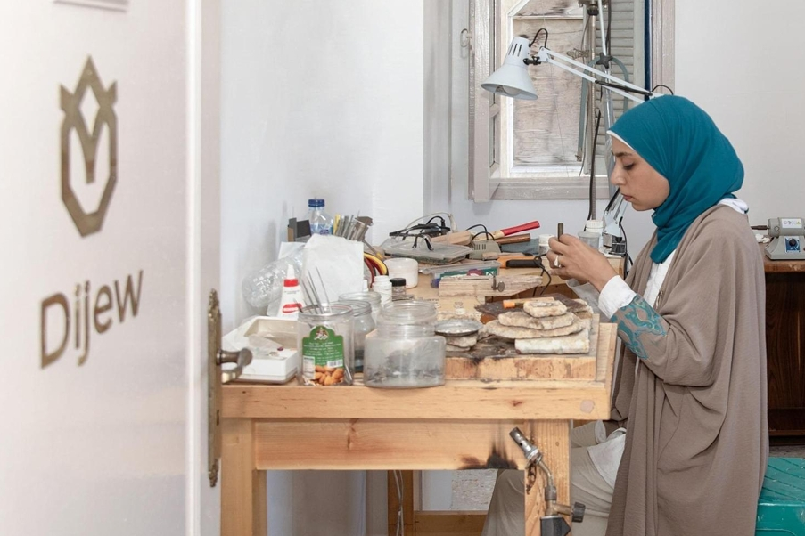

Your cart is empty
Discover the talented hands and passionate hearts behind every Souvenir Egypt piece. Each artisan brings generations of tradition and personal creativity to their craft.
Preserving traditional leathercraft with modern elegance

Founder of Rano Leather
When passion becomes a defining mark... Since childhood, Rana has found happiness among colors and threads. Her journey began with crochet and tapestry, eventually leading her to master natural leather crafting in Bab El Shaariya, Cairo.
When Passion Becomes a Defining Mark Since childhood, Randa El Saey has found her happiness among colors and threads, crafting beauty with her hands and weaving dreams with her imagination. Although she studied at the Faculty of Commerce instead of Fine Arts, her love for handicrafts never faded.
She began her journey by learning crochet and tapestry, mastering both and later training young women to perfect these crafts. Her passion didn't stop there. Randa continued exploring and learning new arts such as quilting, patchwork, embroidery, and fabric painting, searching for a way to merge all these skills into one creative expression that carried her personal touch.
That's when she discovered natural leather — a material that could beautifully blend with fabric, crochet, and other handmade arts. Determined to learn from the source, she went to Bab El Shaariya in Cairo to study the fundamentals of leather crafting, taking her first real steps into the world of handmade bags and wallets.
During the lockdown period of the COVID-19 pandemic, Randa used her time to refine her craft, following international artists online to master the details of finishing and professional design techniques. By the end of 2020, she launched her own brand, and her very first product — a men's wallet featuring embossed detailing — received great feedback from her first client, encouraging her to keep going.
In 2022, Randa's project was selected among the top five finalists in a business incubator program organized by the Ministry of Industry and the Academy of Scientific Research, after which her brand was officially registered. Today, Randa proudly owns Rano, a handmade leather goods brand that represents more than just craftsmanship — it's a story of passion that began with a thread and a needle and grew into a dream crafted with heart and hand.

Founder of "Ibnat Omran"
A 2007 Commerce graduate who found her calling in leather craftsmanship. Asmaa combines authentic Egyptian heritage with modern designs through hand-carving, embossing, and burning techniques.
Asmaa Omran – Founder of the brand "Ibnat Omran" (the daughter of Omran). A 2007 graduate of the Faculty of Commerce, Cairo University, my creative journey in the world of handicrafts began after studying techniques and design in Bab El Shaaria in 2019.
My own brand, "Ibnat Omran," was established in 2021, specializing in natural leather products. My work combines authentic Egyptian heritage with modern designs, showcasing my expertise in hand-carving, embossing, and burning techniques on leather.
I have participated in numerous exhibitions, including the Cairo International Leather Fair, and have completed several courses in marketing and artificial intelligence. I also continue my studies in various art forms and drawing techniques using all available materials.
Each piece I create tells a story of Egyptian heritage, blending traditional motifs with contemporary aesthetics to create timeless leather goods that honor our cultural legacy while appealing to modern sensibilities.

Visual Artist & Leather Designer
Inspired by Egyptian heritage, Shiraz shapes natural leather with contemporary vision. A visual artist and interior designer who creates timeless leather pieces that tell stories of culture and passion.
Inspired by the richness of Egyptian artisanal heritage, Shiraz embraces natural leather as a timeless material, shaping it with a contemporary artistic vision to tell stories of culture, passion, and identity.
Shiraz is a luxury handmade leather goods brand founded by Shiraz Magdi — a visual artist and passionate interior designer with a deep love for traditional craftsmanship and natural materials. The journey began in 2017, when Shiraz participated in a visual arts exhibition using natural leather for the first time.
Captivated by the elegance and sophistication of the material, she immersed herself in learning leather-craft techniques — from cutting and perforating to hand-stitching — eventually setting up a small workshop fully equipped with artisanal tools, and creating her first hand-woven leather bag.
This marked the birth of Shiraz, a brand that continues to evolve with passion, creativity, and an entrepreneurial spirit. Today, Shiraz remains committed to crafting timeless leather pieces that combine artistic expression, meticulous craftsmanship, durability, and elegance — products designed to accompany their owners for a lifetime and reflect their distinctive taste and character.

Trainer & Women's Empowerment Advocate
Certified entrepreneurship trainer from AUC, focusing on economic empowerment of women and youth through leather craftsmanship. A key figure in Egypt's handicraft development initiatives.
Certified entrepreneurship and idea generation trainer for artisans from the American University in Cairo, the National Council for Women, and the United Nations. Also a trainer in the craft of manufacturing natural leather products at cultural centers and the National Council for Women, focusing on the economic empowerment of women and youth.
A professional designer using various design software. A member of the General Assembly of the Handicrafts Chamber at the Federation of Egyptian Industries. A member of the "Creativity in Egypt" initiative, sponsored by Bank of Alexandria and the Sawiris Foundation for the development of handicrafts.
A member of the National Council for Women's initiatives in Cairo for women's development and economic empowerment. Susan's work goes beyond crafting—she's dedicated to passing on traditional skills to new generations, particularly focusing on empowering women through sustainable craft-based livelihoods.

Internationally Certified Leather Designer
Internationally certified trainer specializing in natural leather design, pattern drafting, and all leather techniques from burning and engraving to assembly and pricing.
An internationally certified trainer accredited by the Science and Technology Authority and the European Quality Organization. A professional natural leather designer specializing in the design, execution, and drafting of natural leather patterns, manufacturing, and training in all related techniques, including burning, drawing, engraving, cutting, pricing, and assembling natural leather.
Sahar brings a systematic and professional approach to traditional leathercraft, combining artistic vision with technical precision. Her expertise spans the entire leather production process, making her a valuable resource for both aspiring artisans and established craftspeople looking to refine their skills.
With certifications from international bodies, Sahar ensures that Egyptian leather craftsmanship meets global standards while preserving the unique cultural identity that makes Egyptian leatherwork special.
Where heritage meets contemporary design in precious metals
Jewelry Designer & Educator
Former engineer turned jewelry designer who combines technical insight with heritage craft. Oversees jewelry workshops and champions craft-based learning in design education.
Somaya is a jewelry designer, maker, and passionate advocate for craft-based learning in design. She currently oversees the jewelry design workshop at the German International University. Drawing on her experience as a former engineer and her time at the Jameel House for Traditional Arts, Somaya combines technical insight with a deep appreciation for heritage craft.
She designs and makes jewelry inspired by heritage, blending traditional influences with contemporary expression. In addition to her own practice, she leads practical jewelry workshops that reconnect participants with traditional techniques and nurture their creativity.
Her teaching blends problem-solving skills with hands-on creative approaches, inspiring students to explore new possibilities in material, process, and collaboration. Through her classroom and workshop practice, Somaya continues to champion the power of making as a means to foster engagement, innovation, and a deeper connection to heritage.

Lawyer Turned Jewelry Artist
A lawyer who followed her childhood passion for colors and crafts. Creates jewelry that tells stories of civilizations through metal engraving and unique designs.
Colors, drawing and handcrafting things in arts and fashion were my favorite hobbies since childhood. Although I have graduated with a university degree in Law, I have shifted my personal and professional life into my childhood passion.
My fruitful and enjoyable journey into jewellery started almost ten years ago, driven by the desire to create inspired and unique pieces to reveal the civilizations. In fact, the work of art has a philosophical dimension which I embed through my handcrafted jewellery and accessories to be able to convey particular meanings or to tell a story.
I believe that I am a gifted handcrafted maker by nature which I have enriched through continuous studies; Jewellery designs, Metal hand engraving, Jewellery by Wax and Jewellery making with metal (gold, silver and brass). My technical studies have been an eye opener to deliver state-of-art collections and pieces.
Each piece I create is not just an accessory but a narrative—telling stories of ancient civilizations, personal journeys, or philosophical concepts through the medium of precious metals and stones.
Jewelry Designer & Artist
Finds inspiration in everyday details, believing beauty lies in simplicity. Creates pieces that reflect her artistic soul and bring joy to those who wear them.
I get inspiration from everything around me, every detail can spark a new design. I believe that beauty lies in simplicity, and I design with passion to turn ideas into pieces that reflect my artistic soul.
Seeing my creations come to life as pieces that capture attention and touch people's hearts brings me joy. For me every design is a new journey that adds meaning and happiness to my creative path.
My approach to jewelry design is deeply personal and intuitive. I don't follow trends but rather listen to the materials and let them guide the creative process. Each piece emerges organically, often surprising even me with its final form.
The connection between maker and wearer is sacred to me. When someone chooses to wear my jewelry, they're not just accessorizing—they're carrying a piece of my artistic journey, my emotions, and my vision of beauty in simplicity.

Handmade Jewelry Artist
A student of traditional arts at Beit Jameel School, studying contemporary Islamic art and jewelry making. Blends heritage techniques with modern expression.
Handmade jewelry artist studying at the Beit Jameel School of Traditional Arts and Crafts. Trained at the Jewelry Making Center of the Egyptian Ministry of Industry and currently pursuing a diploma in contemporary Islamic art with the Mamlouk Foundation.
Dina represents the new generation of Egyptian artisans who are deeply rooted in traditional techniques while exploring contemporary expressions. Her work bridges the rich heritage of Islamic art with modern aesthetics, creating pieces that honor tradition while speaking to contemporary tastes.
Through her studies at Beit Jameel and the Mamlouk Foundation, Dina has mastered traditional metalworking techniques while developing her unique artistic voice. Her jewelry often features geometric patterns, calligraphic elements, and symbolic motifs drawn from Egypt's rich artistic heritage.
As a young artisan, Dina is passionate about preserving traditional crafts while making them relevant for today's world. Her work demonstrates how ancient techniques can be used to create modern, wearable art that carries cultural significance.
Master Artisans
Years of Experience
International Awards
Workshops Conducted
Every purchase supports these talented artisans and helps preserve Egypt's rich craft heritage for future generations.